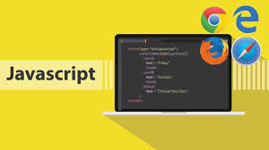
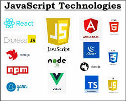

Tại sao JavaScript là lựa chọn tuyệt vời cho lập trình viên

JavaScript không chỉ là ngôn ngữ lập trình phổ biến trong phát triển web mà còn là một công cụ mạnh mẽ giúp bạn xây dựng sự nghiệp lập trình viên thành công. Trong bài viết này, chúng ta sẽ khám phá lý do tại sao JavaScript lại là lựa chọn tuyệt vời cho các lập trình viên, đặc biệt là những ai mới bắt đầu sự nghiệp trong ngành phát triển phần mềm.
1. JavaScript là ngôn ngữ của web
JavaScript là ngôn ngữ lập trình chính cho các ứng dụng web. Hầu hết các trang web và ứng dụng web đều sử dụng JavaScript để tạo ra các tính năng động, tương tác với người dùng. Điều này có nghĩa là khi bạn học JavaScript, bạn sẽ có thể làm việc trên hầu hết các dự án web và ứng dụng trực tuyến.
- Frontend: JavaScript giúp tạo ra giao diện người dùng (UI) động, từ việc xử lý sự kiện (click, hover, input) đến việc tương tác với các API từ phía máy chủ.
- Backend: Với Node.js, JavaScript không chỉ hoạt động trên trình duyệt mà còn có thể chạy trên máy chủ, mở ra cơ hội cho bạn xây dựng cả ứng dụng web và API với cùng một ngôn ngữ. 
2. Nhu cầu về lập trình viên JavaScript
Với sự phát triển không ngừng của các công nghệ web, nhu cầu tuyển dụng lập trình viên JavaScript đang ngày càng tăng. Các công ty không chỉ tìm kiếm những lập trình viên có kỹ năng về HTML, CSS mà còn mong muốn ứng viên có thể sử dụng JavaScript để tạo ra các ứng dụng web và di động mạnh mẽ.
- Các công ty lớn và startup: Các công ty từ lớn đến nhỏ đều yêu cầu kỹ năng JavaScript vì đây là ngôn ngữ phổ biến cho cả frontend và backend. Ví dụ, Facebook, Google, và Netflix đều sử dụng JavaScript trong ứng dụng của mình.
- Làm việc từ xa: JavaScript là một trong những ngôn ngữ có nhu cầu cao đối với công việc từ xa, vì các dự án web có thể được quản lý và phát triển hoàn toàn trực tuyến.
3. Hệ sinh thái phong phú của JavaScript
Một trong những lý do chính khiến JavaScript trở thành lựa chọn phổ biến là hệ sinh thái phong phú của nó. Với hàng triệu thư viện và framework, bạn có thể dễ dàng tìm thấy công cụ để làm việc với mọi loại dự án.
- React, Vue, Angular: Đây là ba framework phổ biến giúp bạn xây dựng ứng dụng frontend hiệu quả và mạnh mẽ. Chúng giúp bạn phát triển giao diện người dùng nhanh chóng và dễ dàng.
- Node.js: Một môi trường thực thi JavaScript phía máy chủ giúp bạn xây dựng ứng dụng backend mạnh mẽ và hiệu quả.
- Express.js, Next.js: Các thư viện và framework này giúp bạn phát triển các ứng dụng web và API với JavaScript dễ dàng hơn. 
4. Tính linh hoạt của JavaScript
Một trong những đặc điểm nổi bật của JavaScript là tính linh hoạt. Bạn có thể sử dụng JavaScript để phát triển các ứng dụng web, trò chơi, ứng dụng di động và thậm chí là các ứng dụng desktop.
- Ứng dụng di động: Với React Native, bạn có thể phát triển ứng dụng di động cho cả iOS và Android bằng cách sử dụng JavaScript.
- Ứng dụng desktop: Với Electron, bạn có thể tạo ra các ứng dụng desktop chạy trên cả Windows, macOS và Linux mà vẫn sử dụng JavaScript.
5. Cộng đồng và tài nguyên học tập phong phú
Một trong những lý do lớn khiến JavaScript trở thành ngôn ngữ lý tưởng cho lập trình viên là cộng đồng người dùng và tài nguyên học tập rộng lớn. Có hàng nghìn khóa học, tài liệu, blog và diễn đàn giúp bạn học hỏi và giải quyết vấn đề nhanh chóng.
- Cộng đồng mạnh mẽ: JavaScript có một cộng đồng người dùng rất lớn trên các nền tảng như Stack Overflow, Reddit, và GitHub. Bạn luôn có thể tìm thấy sự hỗ trợ khi gặp khó khăn.
- Tài nguyên học tập: Có rất nhiều khóa học miễn phí và trả phí trên các nền tảng như Codecademy, freeCodeCamp, Udemy, Coursera, giúp bạn học JavaScript từ cơ bản đến nâng cao.
6. JavaScript cho các lập trình viên mới bắt đầu
JavaScript là một ngôn ngữ dễ học và thân thiện với người mới bắt đầu. Với cú pháp đơn giản và khả năng chạy trực tiếp trên trình duyệt, bạn có thể nhanh chóng viết mã và thấy kết quả ngay lập tức.
- Học qua thực hành: JavaScript cho phép bạn thực hành ngay trên trình duyệt mà không cần phải cài đặt phần mềm phức tạp. Chỉ cần mở công cụ dành cho lập trình viên trong trình duyệt, bạn có thể thử nghiệm mã JavaScript ngay lập tức.
- Tài nguyên học miễn phí: Các khóa học miễn phí, tài liệu và bài hướng dẫn dễ dàng tìm thấy trên mạng giúp bạn bắt đầu học lập trình mà không gặp khó khăn lớn.
Kết luận
JavaScript không chỉ là một ngôn ngữ lập trình mạnh mẽ cho các ứng dụng web, mà còn là một lựa chọn tuyệt vời cho những ai muốn xây dựng sự nghiệp lập trình viên. Với tính linh hoạt, nhu cầu cao từ thị trường lao động, và hệ sinh thái phát triển mạnh mẽ, JavaScript mở ra rất nhiều cơ hội cho các lập trình viên, đặc biệt là những người mới bắt đầu.
Nếu bạn muốn trở thành lập trình viên web hoặc phát triển ứng dụng di động, JavaScript là ngôn ngữ không thể bỏ qua. Hãy bắt đầu học ngay hôm nay và khám phá tiềm năng mà JavaScript mang lại cho sự nghiệp lập trình của bạn!
Sharing is caring!